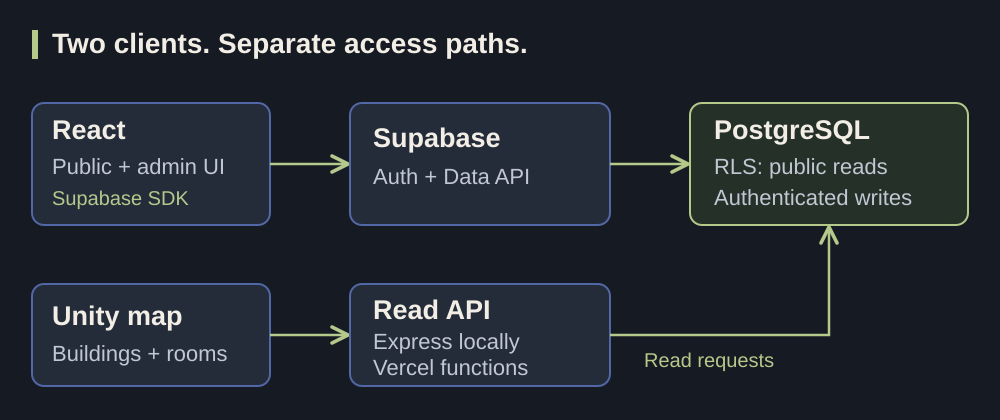

Fullstack web application · Solo developer
Dashboard Profile UPNVJ
University profiles, campus maps, and admin tools. I built the interface, data services, and supporting APIs.
- React
- TypeScript
- Supabase
- Express
Public visitor demo · Admin login required
Explore the build
Problem
Make university profile data and campus facilities browsable while providing an admin interface to update the same information.
My contribution
I implemented the public and admin React interfaces, CRUD forms, Supabase data and authentication services, PostgreSQL setup, and building/room endpoints for the campus-map integration.
Decisions
The React application uses the Supabase SDK directly. Database policies allow public reads and authenticated writes for profile tables. A separate API supplies building and room data to Unity; it is not the route for the dashboard’s CRUD operations. Route-level lazy loading separates the public, login, and admin screens.
Testing evidence
The repository contains tests for required fields in building, facility, and program forms, plus API response tests with mocked database queries.
